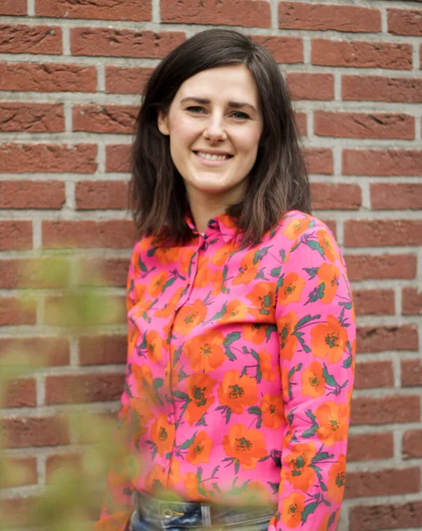

Wie is Zosia?
Ik ben geboren in Polen (1987) en na mijn studie econometrie verhuisd naar Nederland. Samen met mijn man heb ik drie kinderen.
Ik ben nieuwsgierig naar mensen, op zoek naar echtheid, leer graag en houd van humor. Naast hulpverlener ben ik ook christen, minimalist en sport ik graag.